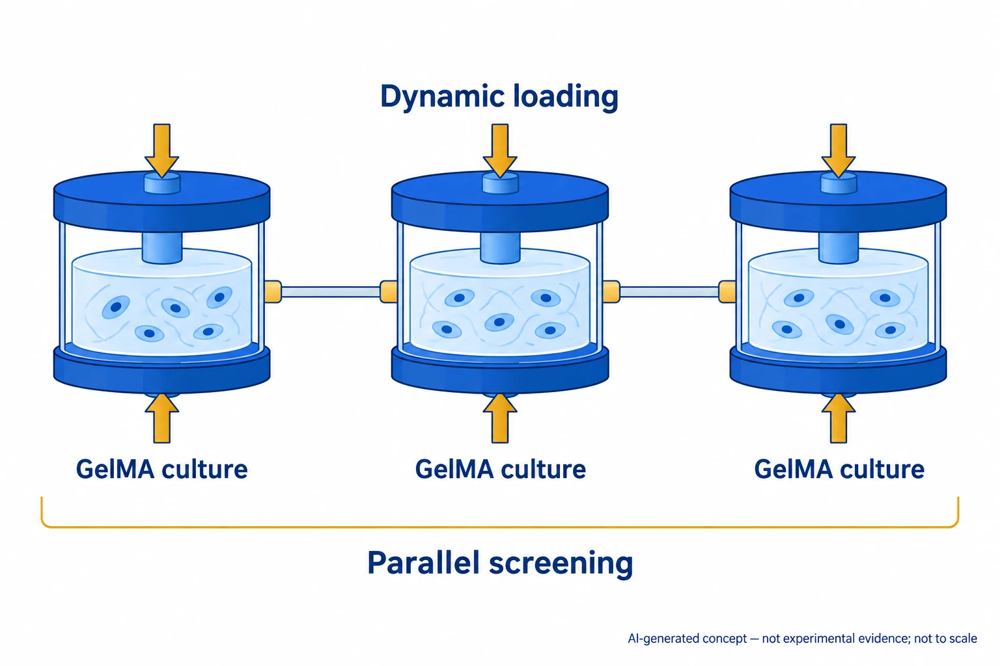

The question behind this study
Interconnectable compression bioreactors examine how mesenchymal stem cells in 3D hydrogel cultures respond to cyclic loading. The modular setup supports parallel comparisons of gel concentration and mechanical-stimulation conditions.
What the study shows
Connectable compression modules screen GelMA concentration and cyclic loading effects on 3D MSC cultures.
The system enables parallel evaluation of matrix variables and dynamic mechanical stimulation.

AI-generated, not-to-scale concept of parallel screening through interconnected modules applying dynamic compression to three-dimensional cell culture in GelMA.
The source scope is the abstract and selected captions. Modules, cells, arrows and links indicate roles rather than actual apparatus, fluid or pressure connections, dimensions, actuation, loading, strain, gel concentration, cell counts, culture conditions, viability, differentiation or statistics.
This is not a reproduced paper figure and does not establish permission to reuse the original figure.
Open questions
How can differences in strain between modules be separated from the effects of matrix concentration?
Conditions for comparison
Compare matched cell sources, GelMA concentrations, compression waveforms, culture durations and osteogenesis readouts.
Related studies
Matrix elasticity directs stem cell lineage specification
DOI: 10.1016/j.cell.2006.06.044 ↗
A study linking matrix elasticity with mesenchymal stem-cell (MSC) lineage illustrates why matrix properties and applied loading need separate consideration.
This connection is based on the PubMed abstract. Elasticity-directed culture and dynamic compression in three-dimensional GelMA differ in both matrix and stimulation conditions.
Abstract-based introductionRESEARCH NEWS
Research in the news
No related stories are linked yet.
Sources used in this summary
This summary draws on the main text and original figures. Supplementary materials and underlying data have not been independently reviewed in full.